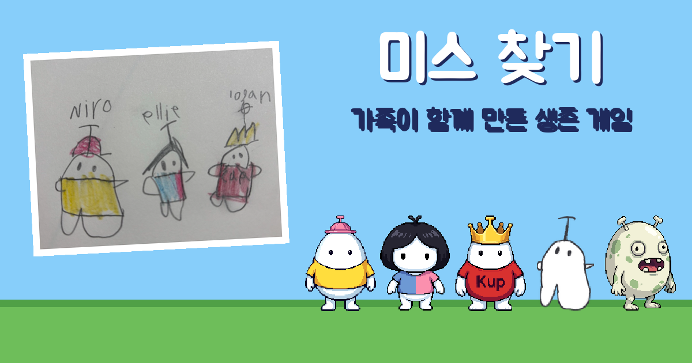

미스 찾기 - 가족이 함께 만든 생존 게임

게임 하러 가기어떤 게임인가요?
낮에는 나무와 광석을 캐고 코인을 모아요. 밤이 되면 몬스터가 나와요. 7일 동안 버티면 성공이에요!
- 미스 찾기: 어딘가에 숨어 있는 미스를 찾으면 칼, 도끼, 총 같은 무기를 줘요.
- 몬스터: 밤에는 좀비와 스켈레톤이 나와요. 무기로 물리쳐요.
- 퀴즈: 수학 문제와 영어 문제를 풀어요.
- 상점: 모은 코인으로 포션과 갑옷을 사요.
- 깜짝 미션: 미스가 알려 주는 미션을 해내면 코인을 받아요.
- 캐릭터: Niro, Ellie, Logan 중에서 골라서 놀아요.
이렇게 움직여요
컴퓨터
- ← → 걷기
- Space 또는 ↑ 점프
- Q 공격, E 캐기
- I 가방, Tab 무기 바꾸기
휴대폰
- 휴대폰을 가로로 돌려요.
- 폰에서는 홈 화면에 추가하면 처음부터 가로 전체화면으로 열려요.
- 왼쪽 조이스틱으로 걷고, 위로 밀면 점프해요.
- 오른쪽 버튼으로 공격해요.
가족이 함께 만들었어요
아이가 그린 그림과 아이디어로 가족이 함께 만든 게임이에요. 캐릭터 Niro, Ellie, Logan도 아이가 직접 그렸어요. 몬스터와 아이템도 같이 정했어요.
설치하지 않아도 인터넷 창에서 바로 할 수 있어요.